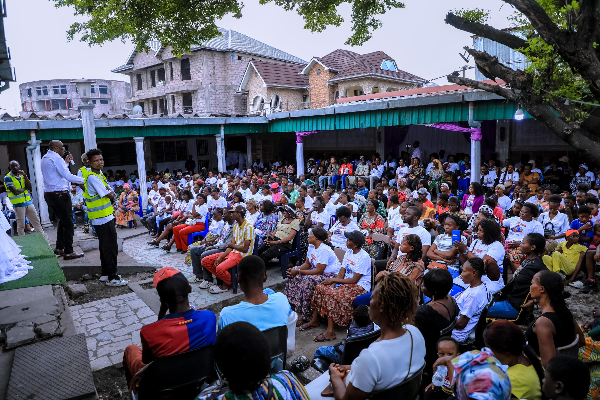
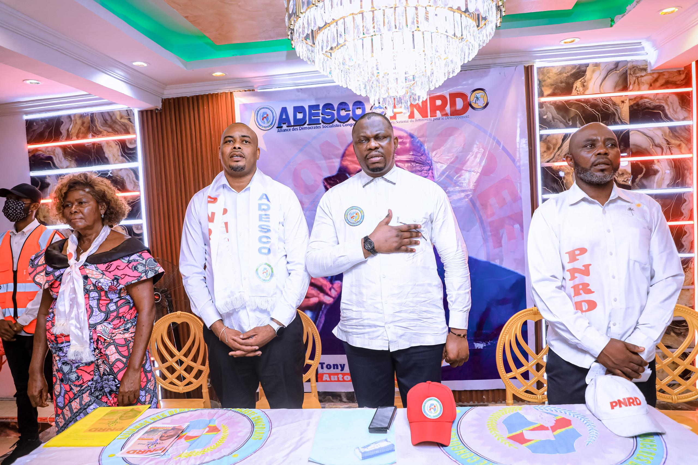
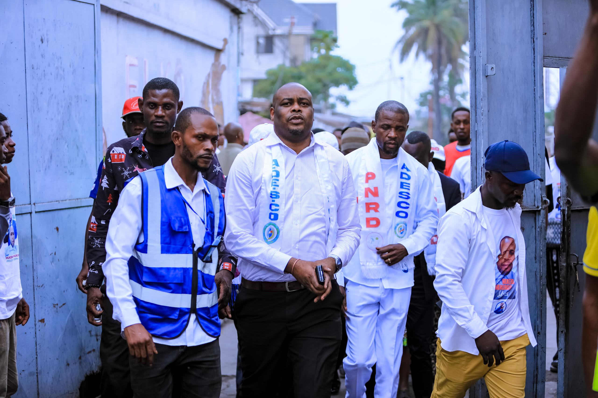

Conférence sur la jeunesse et l’emploi
Une rencontre pour discuter des solutions innovantes à l’emploi des jeunes en RDC.

Le Parti National de Renouveau pour le Développement (PNRD) est engagé à bâtir une République Démocratique du Congo forte, unie et prospère. Nous croyons en un avenir où le développement durable, l’inclusion sociale, et la justice économique sont au cœur de nos actions politiques. Notre parti s’appuie sur des valeurs de transparence, d’engagement citoyen, et d’innovation pour répondre aux défis de notre pays. Ensemble, avançons vers un renouveau qui profite à tous.
En savoir plusGarantir une justice impartiale et équitable pour tous, fondée sur le respect des droits humains et la transparence.
Promouvoir une croissance économique inclusive, durable et créatrice d’emplois pour tous les citoyens.
Assurer l’accès universel aux soins de santé de qualité et renforcer les infrastructures sanitaires.
Favoriser la cohésion sociale, la solidarité et l’inclusion des groupes vulnérables dans le tissu national.
Consolider la paix nationale et assurer la sécurité des citoyens par des actions de prévention et de coopération.
Renforcer le système éducatif pour offrir une éducation accessible et de qualité à chaque enfant congolais.
Protéger nos ressources naturelles et promouvoir un développement respectueux de l’environnement.
Développer les infrastructures modernes pour soutenir la croissance économique et améliorer la qualité de vie.
Encourager l’innovation technologique pour moderniser les services publics et privés.

Une rencontre pour discuter des solutions innovantes à l’emploi des jeunes en RDC.

Discussion autour des perspectives de croissance économique durable en RDC.

Atelier de sensibilisation sur l’importance des soins préventifs et accès aux services de santé.
Adresse : Avenue RTNC n°1, Quartier Sans-fil, Commune Masina, Kinshasa, RDC
Réseaux sociaux :
L’équipe dirigeante du PNRD est composée de professionnels engagés, passionnés par le développement durable, la justice sociale et le progrès de notre nation. Ensemble, ils incarnent les valeurs et la vision du parti pour construire un avenir meilleur pour tous les Congolais.

Tony KANKU
Autorité morale

Ali KUTUMISA
Président

Martin IWEMBA
Secrétaire Général